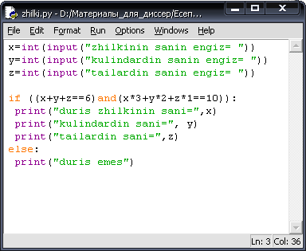

Тармақталу алгоритмін программалау
«Ертегі батырлары» есебі. Алпамыс, Қобыланды және Ер Тарғын батырлар бірнеше
дәулермен шайқасқа түседі. Әрбір дәу 3 соққыдан жеді, нәтижеде барлық дәулер
қашып кетті. Ең көп соққыны Алпамыс батыр соқты – 7 соққы, ең азы Ер Тарғын
батыр – 3 соққы. Дәулердің санын есептейтін программа құрайық.
Есептің Python
программалау тіліндегі программа коды 1,
2 -суреттерде берілген.
|
Сурет 1
- Дәулердің
санын есептеу
Сурет 2 - Алынған нәтиже
Есептің С++ программалау
тілінде программа коды 3, 4 – суреттерде көрсетілген.
|
Сурет 3
- C++
программалау тілінде дәулердің санын есептеу
Сурет 4 - Алынған нәтиже
Жылқы
- қазақты әлемдік деңгейге танытқан материалдық игіліміздің биігінде тұр.
"Жылқы - малдың патшасы". Осы нақыл сөздерде еліміздің, елдігіміздің
сәні мен мәні жатқандай. Көшпенділердің өмірі аттың жалында, ердің қомында
өтті. Жылқымыздың өткен замандарда көптігі болар: "Жылқылы елде жау көп,
жатақ елде дау көп",-депті бабаларымыз. Тағы бір жылқы малы туралы есепті
қарастырайық.
 Жылқыға жем беру
есебі. Бір малшы алты жылқысына күн сайын он қадақ сұлы беріп жүреді. Жем
жылқының жасына қарай бөлінеді: биеге - үш қадақ, құлындарына - екі қадақ, ал
тай басына бір қадақтан береді. Мал иесі алыстан үйіне келіп қонақ болып
отырған жекжатына әңгіме арасында өзінің
осы тіршілігін айтып қалады. «Сонда бие нешеу, құнан нешеу, тай нешеу болғаны?»
- деп, қонақ жылқы санын іштей есептеуге көшіпті. С++ және Python программалау
тілінде табылған жылқы санының дұрыстығын есептейтін программа құрайық.
Жылқыға жем беру
есебі. Бір малшы алты жылқысына күн сайын он қадақ сұлы беріп жүреді. Жем
жылқының жасына қарай бөлінеді: биеге - үш қадақ, құлындарына - екі қадақ, ал
тай басына бір қадақтан береді. Мал иесі алыстан үйіне келіп қонақ болып
отырған жекжатына әңгіме арасында өзінің
осы тіршілігін айтып қалады. «Сонда бие нешеу, құнан нешеу, тай нешеу болғаны?»
- деп, қонақ жылқы санын іштей есептеуге көшіпті. С++ және Python программалау
тілінде табылған жылқы санының дұрыстығын есептейтін программа құрайық. Есептің Python
программалау тіліндегі программа коды 5,
6 -суреттерде берілген.
|

Сурет 5
- Жылқы санын есептеу
Сурет 6 - Алынған нәтиже
Есептің С++ программалау
тілінде программа коды 7, 8 – суреттерде
көрсетілген.
|
Сурет 7 - Жылқы санын есептеу
Сурет 8 - Алынған
нәтиже
— Сәлем алеукум, жүз
қаз,— деп сағынышпен сәлемдеседі.
— Уәликум үссәлем,
жалғыз қаз,— деп үн қатады қаздардың көсемі.— Бірақ біз, сен айтқандай, жүз
емеспіз. Жүз болу үшін бізге әуелі өзіміздің санымыздай сан қос, одан соң сол
қосқаныңның жартысын, одан кейін оның жартысын, ең ақырында өзіңді қос, сонда
бәріміз жүз болып шығамыз. Көктемде ұшып өткен қаздар саны қырықтан кем, отыз
үштен артық, әрі екіге екі рет (төртке) бөлінетін сан. Көл жағасында отырған
жалғыз қаз әрі-бері ойланып-толғана келіп, үстінен шып өткен қаздардың қанша
екенін біледі...
Жаз өтіп, күз таяған
шақта жалғыз қаз жайлағанкөл үстінен оңтүстік жаққа бет алып бір тізбек қаз
жіптей созылып өтеді.
— Сәлем алейкум жүз
қаз,— деп көлдегі жалғыз қаз оларға ебелектеп сәлем береді. Қаздардың көсемі
оның сәлемін қабылдап алысымен үн қатады:
— Біз жаздай
балапандап көбейдік, енді бес топ болып ұшып барамыз. Артымыздағы қаздар біздей
ғана, одан кейінгісі екі есе, одан кейінгісі үш есе, ең соңғымыз төрт есе
көппіз. Бәрімізге сен қосылсаң жүз боламыз.
Іркес-тіркес созыла
ұшып бара жатқан қаздар тізбегінің соңынан қарап қалған жалғыз қаз олардың
әртобында қанша қаз бар екенін де дәл есептеп табады. Мұны жалғыз қаз қалай
білгенін есептейтін программа құрайық?
Есепке нұсқаулық: Есеп шартына сүйенсек,
көктемде ұшып өткен қаздар саны қырықтан кем, отыз үштен артық, әрі екіге екі
рет (төртке) бөлінетін сан. Отыз бен қырық арасында ондай сан — отыз алты.
Есептің екінші сұрағына жауап беру үшін күзде шып өткен бірінші топтағы қаз санын
«бір есе» деп алған ыңғайлы. Көктемде отыз алты қаз, күзде: бірінші және екінші
топтың әрбірінде тоғыз қаздан, үшінші топта он сегіз қаз, төртінші топта жиырма
жеті қаз, бесінші топта отыз алты қаз болған.
Есептің Python
программалау тіліндегі программа коды 9,
10 -суреттерде берілген.
|
Сурет 9 - Жүз қазды есептеу
Сурет 10
- Алынған
нәтиже
Берілген есептің С++
программалау тілінде программа коды 11, 12 – суреттерде
көрсетілген.
|
Сурет 11
- С++ программалау тілінде Жүз қазды есепте

Сурет 12 - Алынған нәтиже